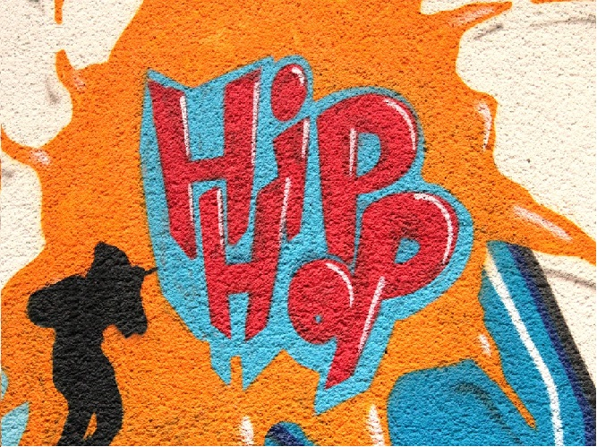

Un espacio para promover la unión y el crecimiento de la cultura HIP-HOP
Hip-Hop

Historia del Hip-Hop
El Hip-Hop se inicio en los barrios marginales de New York a finales de los 70 como movimiento artístico y revolucionario que pretendía llevar mensajes a los seguidores de los principales problemas sociales de la época, la desigualdad de razas, la segregación por cleros, la violencia entre pandillas, la intolerancia en general, la pobreza y la decadencia en común que se vivía en esos tiempos. Se podría decir, que de la cultura Hip-Hop surgen cuatro pilares o subculturas que marcan la diferencia con otros generos, se hace referencia al Dj como productor musical, al Rap como musica principal, al breaking como baile característico y al Graffity como arte pictórico de la cultura. Gracias a esta musica y al desglose de sus pilares, miles de jóvenes lograron huir de las calles y entraron en un mundo de rimas, colores y sonidos, apaciguaron los problemas de su comunidad y dieron a conocer con poesía sus vidas y la problemática en la que se vivía en esos tiempos. Como todo, el Hip-Hop ha evolucionado, los escritos hablan de realidades mundiales, problemas sociales, desigualdad, política, teorías de conspiración o la unión entre cuerpo y espíritu, se ha dejado a un lado los problemas callejeros y se ha llevado el contexto hacia algo mas humano. He dejado de ver al Hip-Hop como un simple movimiento cultural, día a día hago mas personal el sentimiento y el respeto hacia esta cultura.